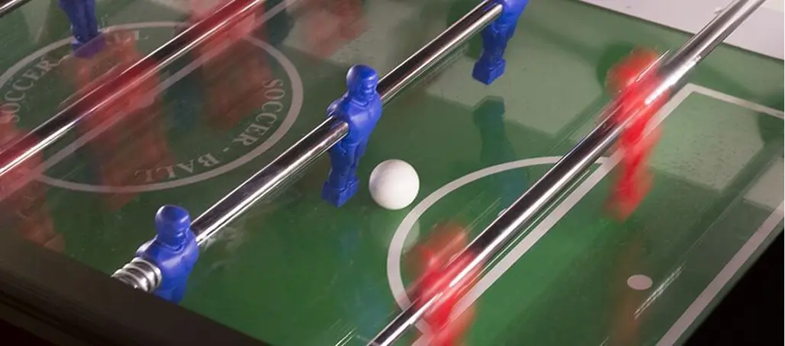

Bordfodbood
Bordfodbold i København
Hvis du leder efter et sjovt sted at spille bordfodbold i København, er Pub & Sport det oplagte valg. Her kombineres hyggelig stemning med actionfyldt underholdning midt i byen. Tag vennerne, kollegaerne eller kæresten med til en sjov aften, hvor I kan dyste mod hinanden – eller sætte gang i en spontan turnering. Stemningen er i top, og baren står klar med både øl og sodavand, så I kan holde energien oppe mellem kampene.
Bordfodbold hos Pub & Sport
Hos Pub & Sport har vi to bordfodboldborde og masser af plads til at hygge sig før, under og efter kampene. Det koster kun 10 kr. pr. spil – du smider mønten i bordet, og så er du klar. Der er ingen depositum eller bøvl. Uanset om du kommer forbi før en fodboldkamp på storskærmene, eller bare leder efter en sjov start på byturen, er bordfodbold altid en god idé hos os.
Regler for bordfodbold
Reglerne er enkle: Man spiller til 10 mål, og bolden skal spilles i gang fra midten med to berøringer. Det er en god idé at aftale på forhånd, om spinning er tilladt – som regel spiller man uden. Efter hvert mål gives bolden op af det hold, der blev scoret imod. Husk at bolden kun må holdes i kort tid: 15 sekunder på 5-mandsstangen og 10 sekunder på de andre. Det er selvfølgelig ikke tilladt at løfte eller skubbe til bordet. Og vigtigst af alt – husk at få noget at drikke undervejs. Du kan se vores udvalg i baren lige her.